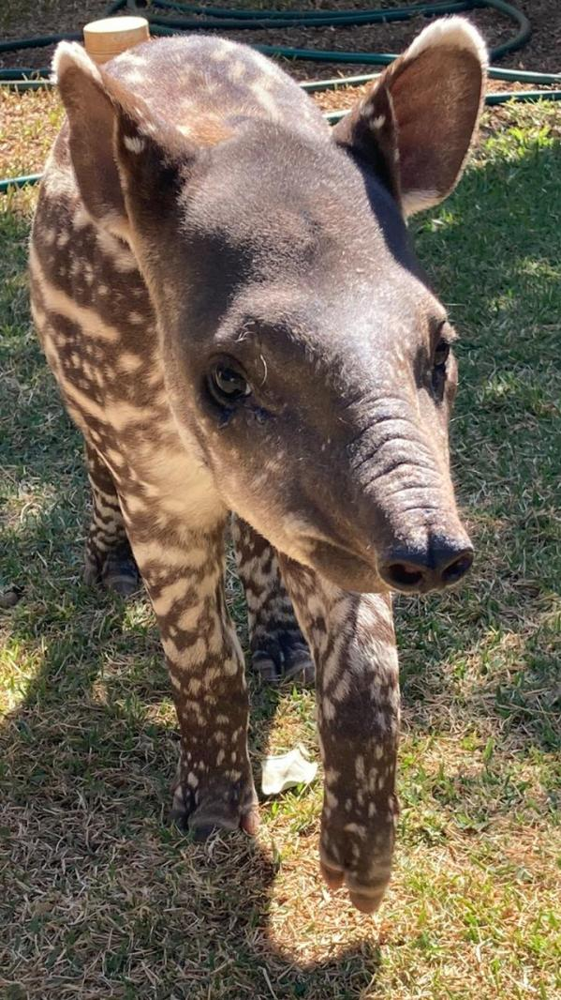
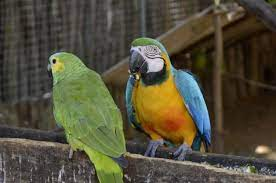
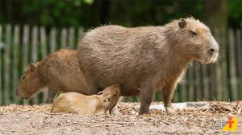

A Ecologia Paranaense
-
A ANTA
QUAL A IMPORTÂNCIA DA ANTA PARA A ECOLOGIA PARANAENSE?
A anta contribui com a regulação da diversidade de plantas e o queixada com a produtividade, biomassa e densidade de plântulas no sub-bosque. No processo de regulação espacial, a palmeira Euterpe edulis, conhecida como palmito-juçara, desempenha papel essencial, atraindo os animais com sua enorme quantidade de frutos. A presença da anta e sua preservação são de extrema importância para o PEI e para a Mata Atlântica, segundo o biólogo Bruno Barbanti. “As aparições ajudam a mostrar o grau de preservação da região. Isso quer dizer que o local está dando capacidade de vida para esses animais”, explica ele.

-
A ARARA AZUL
QUAL A IMPORTANCIA DA ARARA AZUL?
Elas conseguem ampliar pequenas cavidades para se reproduzirem, função que beneficia outras 24 espécies que usam a mesma cavidade para a mesma função. Onde não há arara-azul, também não há essa diversidade, porque as outras espécies dependem desses espaços e não conseguem produzi-los sozinhas.
 -
A CAPIVARA
Qual a imprtancia das capivaras ao meio-ambiente?
> As capivaras selecionaram positivamente às paisagens abertas com abundância de gramíneas e água. Estes resultados reforçam a necessidade de amostragens noturnas em estudos de ecologia e agregam informações importantes sobre a ecologia espacial da capivara em bioma florestal.